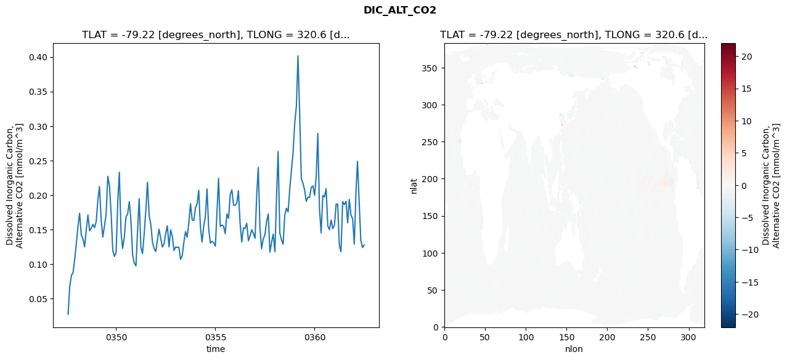
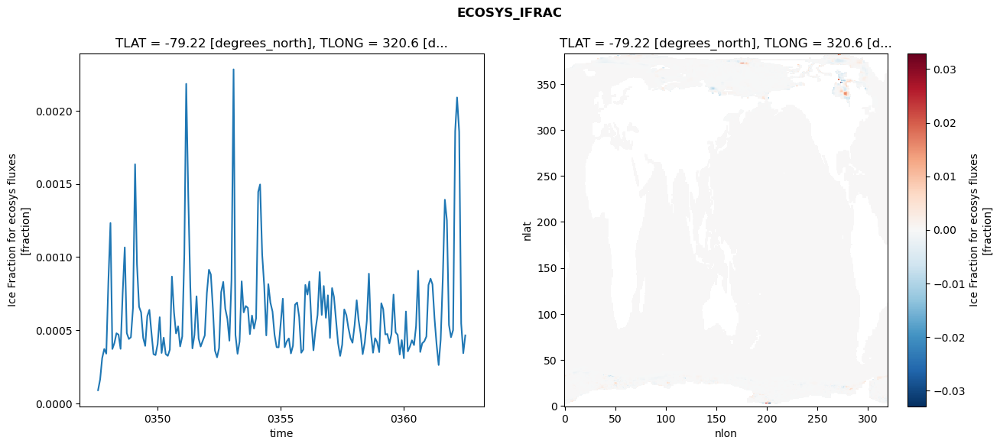
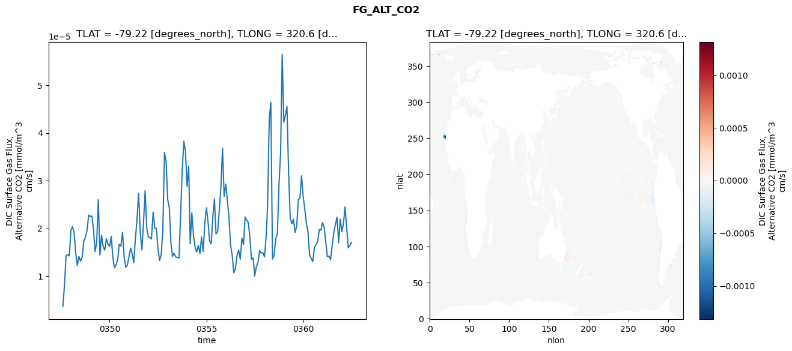
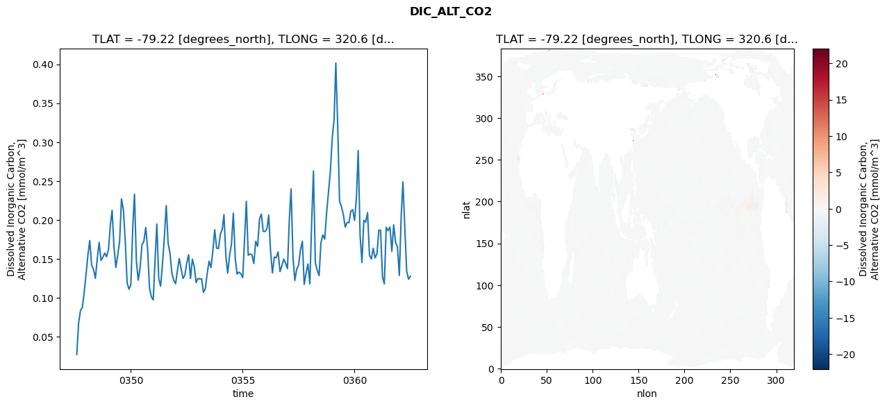
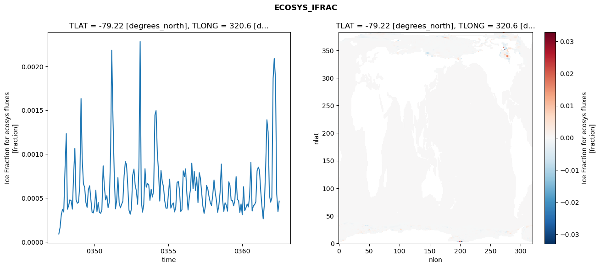
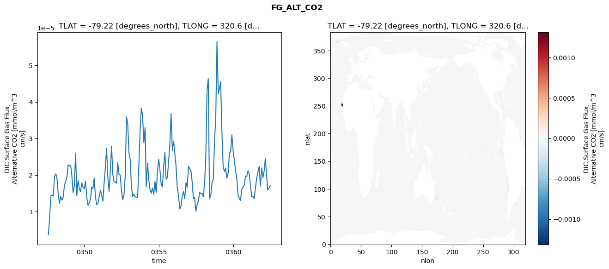

glb-dor_North_Atlantic_basin_004_1999-07-01_00018#
Simulation details#
Case: smyle.cdr-atlas-v0.glb-dor_North_Atlantic_basin_004_1999-07-01_00018.001
Basin: North_Atlantic_basin
Polygon: 4.0
Start date: 1999-07
Show code cell source Hide code cell source
import xarray as xr
import matplotlib.pyplot as plt
Show code cell source Hide code cell source
zarr_store = "/path/to/zarr/store"
# Parameters
zarr_store = "/global/cfs/projectdirs/m4746/Projects/Ocean-CDR-Atlas-v0/data/validation/smyle.cdr-atlas-v0.glb-dor_North_Atlantic_basin_004_1999-07-01_00018.001.validation.zarr"
Show code cell source Hide code cell source
%%time
ds_o = xr.open_zarr(zarr_store).compute()
ds_o
CPU times: user 674 ms, sys: 560 ms, total: 1.23 s
Wall time: 1.58 s
<xarray.Dataset> Size: 2MB
Dimensions: (nlat: 384, nlon: 320, time: 180)
Coordinates:
TLAT float64 8B -79.22
TLONG float64 8B 320.6
ULAT float64 8B -78.95
ULONG float64 8B 321.1
* time (time) object 1kB 0347-08-01 00:00:00 ... 0362-07-01 0...
z_t float32 4B 500.0
Dimensions without coordinates: nlat, nlon
Data variables:
ALK_ALT_CO2_diff (nlat, nlon) float32 492kB nan nan nan ... nan nan nan
ALK_ALT_CO2_rmse (time) float64 1kB 0.01432 0.03011 ... 0.1018 0.1045
DIC_ALT_CO2_diff (nlat, nlon) float32 492kB nan nan nan ... nan nan nan
DIC_ALT_CO2_rmse (time) float64 1kB 0.02741 0.06822 ... 0.124 0.128
ECOSYS_IFRAC_diff (nlat, nlon) float32 492kB nan nan nan ... nan nan nan
ECOSYS_IFRAC_rmse (time) float64 1kB 9.046e-05 0.000165 ... 0.0004654
FG_ALT_CO2_diff (nlat, nlon) float32 492kB nan nan nan ... nan nan nan
FG_ALT_CO2_rmse (time) float64 1kB 3.632e-06 8.066e-06 ... 1.706e-05xarray.Dataset
- nlat: 384
- nlon: 320
- time: 180
- TLAT()float64-79.22
- long_name :
- array of t-grid latitudes
- units :
- degrees_north
array(-79.22052261)
- TLONG()float64320.6
- long_name :
- array of t-grid longitudes
- units :
- degrees_east
array(320.56250892)
- ULAT()float64-78.95
- long_name :
- array of u-grid latitudes
- units :
- degrees_north
array(-78.95289509)
- ULONG()float64321.1
- long_name :
- array of u-grid longitudes
- units :
- degrees_east
array(321.12500894)
- time(time)object0347-08-01 00:00:00 ... 0362-07-...
- bounds :
- time_bound
- long_name :
- time
array([cftime.DatetimeNoLeap(347, 8, 1, 0, 0, 0, 0, has_year_zero=True), cftime.DatetimeNoLeap(347, 9, 1, 0, 0, 0, 0, has_year_zero=True), cftime.DatetimeNoLeap(347, 10, 1, 0, 0, 0, 0, has_year_zero=True), cftime.DatetimeNoLeap(347, 11, 1, 0, 0, 0, 0, has_year_zero=True), cftime.DatetimeNoLeap(347, 12, 1, 0, 0, 0, 0, has_year_zero=True), cftime.DatetimeNoLeap(348, 1, 1, 0, 0, 0, 0, has_year_zero=True), cftime.DatetimeNoLeap(348, 2, 1, 0, 0, 0, 0, has_year_zero=True), cftime.DatetimeNoLeap(348, 3, 1, 0, 0, 0, 0, has_year_zero=True), cftime.DatetimeNoLeap(348, 4, 1, 0, 0, 0, 0, has_year_zero=True), cftime.DatetimeNoLeap(348, 5, 1, 0, 0, 0, 0, has_year_zero=True), cftime.DatetimeNoLeap(348, 6, 1, 0, 0, 0, 0, has_year_zero=True), cftime.DatetimeNoLeap(348, 7, 1, 0, 0, 0, 0, has_year_zero=True), cftime.DatetimeNoLeap(348, 8, 1, 0, 0, 0, 0, has_year_zero=True), cftime.DatetimeNoLeap(348, 9, 1, 0, 0, 0, 0, has_year_zero=True), cftime.DatetimeNoLeap(348, 10, 1, 0, 0, 0, 0, has_year_zero=True), cftime.DatetimeNoLeap(348, 11, 1, 0, 0, 0, 0, has_year_zero=True), cftime.DatetimeNoLeap(348, 12, 1, 0, 0, 0, 0, has_year_zero=True), cftime.DatetimeNoLeap(349, 1, 1, 0, 0, 0, 0, has_year_zero=True), cftime.DatetimeNoLeap(349, 2, 1, 0, 0, 0, 0, has_year_zero=True), cftime.DatetimeNoLeap(349, 3, 1, 0, 0, 0, 0, has_year_zero=True), cftime.DatetimeNoLeap(349, 4, 1, 0, 0, 0, 0, has_year_zero=True), cftime.DatetimeNoLeap(349, 5, 1, 0, 0, 0, 0, has_year_zero=True), cftime.DatetimeNoLeap(349, 6, 1, 0, 0, 0, 0, has_year_zero=True), cftime.DatetimeNoLeap(349, 7, 1, 0, 0, 0, 0, has_year_zero=True), cftime.DatetimeNoLeap(349, 8, 1, 0, 0, 0, 0, has_year_zero=True), cftime.DatetimeNoLeap(349, 9, 1, 0, 0, 0, 0, has_year_zero=True), cftime.DatetimeNoLeap(349, 10, 1, 0, 0, 0, 0, has_year_zero=True), cftime.DatetimeNoLeap(349, 11, 1, 0, 0, 0, 0, has_year_zero=True), cftime.DatetimeNoLeap(349, 12, 1, 0, 0, 0, 0, has_year_zero=True), cftime.DatetimeNoLeap(350, 1, 1, 0, 0, 0, 0, has_year_zero=True), cftime.DatetimeNoLeap(350, 2, 1, 0, 0, 0, 0, has_year_zero=True), cftime.DatetimeNoLeap(350, 3, 1, 0, 0, 0, 0, has_year_zero=True), cftime.DatetimeNoLeap(350, 4, 1, 0, 0, 0, 0, has_year_zero=True), cftime.DatetimeNoLeap(350, 5, 1, 0, 0, 0, 0, has_year_zero=True), cftime.DatetimeNoLeap(350, 6, 1, 0, 0, 0, 0, has_year_zero=True), cftime.DatetimeNoLeap(350, 7, 1, 0, 0, 0, 0, has_year_zero=True), cftime.DatetimeNoLeap(350, 8, 1, 0, 0, 0, 0, has_year_zero=True), cftime.DatetimeNoLeap(350, 9, 1, 0, 0, 0, 0, has_year_zero=True), cftime.DatetimeNoLeap(350, 10, 1, 0, 0, 0, 0, has_year_zero=True), cftime.DatetimeNoLeap(350, 11, 1, 0, 0, 0, 0, has_year_zero=True), cftime.DatetimeNoLeap(350, 12, 1, 0, 0, 0, 0, has_year_zero=True), cftime.DatetimeNoLeap(351, 1, 1, 0, 0, 0, 0, has_year_zero=True), cftime.DatetimeNoLeap(351, 2, 1, 0, 0, 0, 0, has_year_zero=True), cftime.DatetimeNoLeap(351, 3, 1, 0, 0, 0, 0, has_year_zero=True), cftime.DatetimeNoLeap(351, 4, 1, 0, 0, 0, 0, has_year_zero=True), cftime.DatetimeNoLeap(351, 5, 1, 0, 0, 0, 0, has_year_zero=True), cftime.DatetimeNoLeap(351, 6, 1, 0, 0, 0, 0, has_year_zero=True), cftime.DatetimeNoLeap(351, 7, 1, 0, 0, 0, 0, has_year_zero=True), cftime.DatetimeNoLeap(351, 8, 1, 0, 0, 0, 0, has_year_zero=True), cftime.DatetimeNoLeap(351, 9, 1, 0, 0, 0, 0, has_year_zero=True), cftime.DatetimeNoLeap(351, 10, 1, 0, 0, 0, 0, has_year_zero=True), cftime.DatetimeNoLeap(351, 11, 1, 0, 0, 0, 0, has_year_zero=True), cftime.DatetimeNoLeap(351, 12, 1, 0, 0, 0, 0, has_year_zero=True), cftime.DatetimeNoLeap(352, 1, 1, 0, 0, 0, 0, has_year_zero=True), cftime.DatetimeNoLeap(352, 2, 1, 0, 0, 0, 0, has_year_zero=True), cftime.DatetimeNoLeap(352, 3, 1, 0, 0, 0, 0, has_year_zero=True), cftime.DatetimeNoLeap(352, 4, 1, 0, 0, 0, 0, has_year_zero=True), cftime.DatetimeNoLeap(352, 5, 1, 0, 0, 0, 0, has_year_zero=True), cftime.DatetimeNoLeap(352, 6, 1, 0, 0, 0, 0, has_year_zero=True), cftime.DatetimeNoLeap(352, 7, 1, 0, 0, 0, 0, has_year_zero=True), cftime.DatetimeNoLeap(352, 8, 1, 0, 0, 0, 0, has_year_zero=True), cftime.DatetimeNoLeap(352, 9, 1, 0, 0, 0, 0, has_year_zero=True), cftime.DatetimeNoLeap(352, 10, 1, 0, 0, 0, 0, has_year_zero=True), cftime.DatetimeNoLeap(352, 11, 1, 0, 0, 0, 0, has_year_zero=True), cftime.DatetimeNoLeap(352, 12, 1, 0, 0, 0, 0, has_year_zero=True), cftime.DatetimeNoLeap(353, 1, 1, 0, 0, 0, 0, has_year_zero=True), cftime.DatetimeNoLeap(353, 2, 1, 0, 0, 0, 0, has_year_zero=True), cftime.DatetimeNoLeap(353, 3, 1, 0, 0, 0, 0, has_year_zero=True), cftime.DatetimeNoLeap(353, 4, 1, 0, 0, 0, 0, has_year_zero=True), cftime.DatetimeNoLeap(353, 5, 1, 0, 0, 0, 0, has_year_zero=True), cftime.DatetimeNoLeap(353, 6, 1, 0, 0, 0, 0, has_year_zero=True), cftime.DatetimeNoLeap(353, 7, 1, 0, 0, 0, 0, has_year_zero=True), cftime.DatetimeNoLeap(353, 8, 1, 0, 0, 0, 0, has_year_zero=True), cftime.DatetimeNoLeap(353, 9, 1, 0, 0, 0, 0, has_year_zero=True), cftime.DatetimeNoLeap(353, 10, 1, 0, 0, 0, 0, has_year_zero=True), cftime.DatetimeNoLeap(353, 11, 1, 0, 0, 0, 0, has_year_zero=True), cftime.DatetimeNoLeap(353, 12, 1, 0, 0, 0, 0, has_year_zero=True), cftime.DatetimeNoLeap(354, 1, 1, 0, 0, 0, 0, has_year_zero=True), cftime.DatetimeNoLeap(354, 2, 1, 0, 0, 0, 0, has_year_zero=True), cftime.DatetimeNoLeap(354, 3, 1, 0, 0, 0, 0, has_year_zero=True), cftime.DatetimeNoLeap(354, 4, 1, 0, 0, 0, 0, has_year_zero=True), cftime.DatetimeNoLeap(354, 5, 1, 0, 0, 0, 0, has_year_zero=True), cftime.DatetimeNoLeap(354, 6, 1, 0, 0, 0, 0, has_year_zero=True), cftime.DatetimeNoLeap(354, 7, 1, 0, 0, 0, 0, has_year_zero=True), cftime.DatetimeNoLeap(354, 8, 1, 0, 0, 0, 0, has_year_zero=True), cftime.DatetimeNoLeap(354, 9, 1, 0, 0, 0, 0, has_year_zero=True), cftime.DatetimeNoLeap(354, 10, 1, 0, 0, 0, 0, has_year_zero=True), cftime.DatetimeNoLeap(354, 11, 1, 0, 0, 0, 0, has_year_zero=True), cftime.DatetimeNoLeap(354, 12, 1, 0, 0, 0, 0, has_year_zero=True), cftime.DatetimeNoLeap(355, 1, 1, 0, 0, 0, 0, has_year_zero=True), cftime.DatetimeNoLeap(355, 2, 1, 0, 0, 0, 0, has_year_zero=True), cftime.DatetimeNoLeap(355, 3, 1, 0, 0, 0, 0, has_year_zero=True), cftime.DatetimeNoLeap(355, 4, 1, 0, 0, 0, 0, has_year_zero=True), cftime.DatetimeNoLeap(355, 5, 1, 0, 0, 0, 0, has_year_zero=True), cftime.DatetimeNoLeap(355, 6, 1, 0, 0, 0, 0, has_year_zero=True), cftime.DatetimeNoLeap(355, 7, 1, 0, 0, 0, 0, has_year_zero=True), cftime.DatetimeNoLeap(355, 8, 1, 0, 0, 0, 0, has_year_zero=True), cftime.DatetimeNoLeap(355, 9, 1, 0, 0, 0, 0, has_year_zero=True), cftime.DatetimeNoLeap(355, 10, 1, 0, 0, 0, 0, has_year_zero=True), cftime.DatetimeNoLeap(355, 11, 1, 0, 0, 0, 0, has_year_zero=True), cftime.DatetimeNoLeap(355, 12, 1, 0, 0, 0, 0, has_year_zero=True), cftime.DatetimeNoLeap(356, 1, 1, 0, 0, 0, 0, has_year_zero=True), cftime.DatetimeNoLeap(356, 2, 1, 0, 0, 0, 0, has_year_zero=True), cftime.DatetimeNoLeap(356, 3, 1, 0, 0, 0, 0, has_year_zero=True), cftime.DatetimeNoLeap(356, 4, 1, 0, 0, 0, 0, has_year_zero=True), cftime.DatetimeNoLeap(356, 5, 1, 0, 0, 0, 0, has_year_zero=True), cftime.DatetimeNoLeap(356, 6, 1, 0, 0, 0, 0, has_year_zero=True), cftime.DatetimeNoLeap(356, 7, 1, 0, 0, 0, 0, has_year_zero=True), cftime.DatetimeNoLeap(356, 8, 1, 0, 0, 0, 0, has_year_zero=True), cftime.DatetimeNoLeap(356, 9, 1, 0, 0, 0, 0, has_year_zero=True), cftime.DatetimeNoLeap(356, 10, 1, 0, 0, 0, 0, has_year_zero=True), cftime.DatetimeNoLeap(356, 11, 1, 0, 0, 0, 0, has_year_zero=True), cftime.DatetimeNoLeap(356, 12, 1, 0, 0, 0, 0, has_year_zero=True), cftime.DatetimeNoLeap(357, 1, 1, 0, 0, 0, 0, has_year_zero=True), cftime.DatetimeNoLeap(357, 2, 1, 0, 0, 0, 0, has_year_zero=True), cftime.DatetimeNoLeap(357, 3, 1, 0, 0, 0, 0, has_year_zero=True), cftime.DatetimeNoLeap(357, 4, 1, 0, 0, 0, 0, has_year_zero=True), cftime.DatetimeNoLeap(357, 5, 1, 0, 0, 0, 0, has_year_zero=True), cftime.DatetimeNoLeap(357, 6, 1, 0, 0, 0, 0, has_year_zero=True), cftime.DatetimeNoLeap(357, 7, 1, 0, 0, 0, 0, has_year_zero=True), cftime.DatetimeNoLeap(357, 8, 1, 0, 0, 0, 0, has_year_zero=True), cftime.DatetimeNoLeap(357, 9, 1, 0, 0, 0, 0, has_year_zero=True), cftime.DatetimeNoLeap(357, 10, 1, 0, 0, 0, 0, has_year_zero=True), cftime.DatetimeNoLeap(357, 11, 1, 0, 0, 0, 0, has_year_zero=True), cftime.DatetimeNoLeap(357, 12, 1, 0, 0, 0, 0, has_year_zero=True), cftime.DatetimeNoLeap(358, 1, 1, 0, 0, 0, 0, has_year_zero=True), cftime.DatetimeNoLeap(358, 2, 1, 0, 0, 0, 0, has_year_zero=True), cftime.DatetimeNoLeap(358, 3, 1, 0, 0, 0, 0, has_year_zero=True), cftime.DatetimeNoLeap(358, 4, 1, 0, 0, 0, 0, has_year_zero=True), cftime.DatetimeNoLeap(358, 5, 1, 0, 0, 0, 0, has_year_zero=True), cftime.DatetimeNoLeap(358, 6, 1, 0, 0, 0, 0, has_year_zero=True), cftime.DatetimeNoLeap(358, 7, 1, 0, 0, 0, 0, has_year_zero=True), cftime.DatetimeNoLeap(358, 8, 1, 0, 0, 0, 0, has_year_zero=True), cftime.DatetimeNoLeap(358, 9, 1, 0, 0, 0, 0, has_year_zero=True), cftime.DatetimeNoLeap(358, 10, 1, 0, 0, 0, 0, has_year_zero=True), cftime.DatetimeNoLeap(358, 11, 1, 0, 0, 0, 0, has_year_zero=True), cftime.DatetimeNoLeap(358, 12, 1, 0, 0, 0, 0, has_year_zero=True), cftime.DatetimeNoLeap(359, 1, 1, 0, 0, 0, 0, has_year_zero=True), cftime.DatetimeNoLeap(359, 2, 1, 0, 0, 0, 0, has_year_zero=True), cftime.DatetimeNoLeap(359, 3, 1, 0, 0, 0, 0, has_year_zero=True), cftime.DatetimeNoLeap(359, 4, 1, 0, 0, 0, 0, has_year_zero=True), cftime.DatetimeNoLeap(359, 5, 1, 0, 0, 0, 0, has_year_zero=True), cftime.DatetimeNoLeap(359, 6, 1, 0, 0, 0, 0, has_year_zero=True), cftime.DatetimeNoLeap(359, 7, 1, 0, 0, 0, 0, has_year_zero=True), cftime.DatetimeNoLeap(359, 8, 1, 0, 0, 0, 0, has_year_zero=True), cftime.DatetimeNoLeap(359, 9, 1, 0, 0, 0, 0, has_year_zero=True), cftime.DatetimeNoLeap(359, 10, 1, 0, 0, 0, 0, has_year_zero=True), cftime.DatetimeNoLeap(359, 11, 1, 0, 0, 0, 0, has_year_zero=True), cftime.DatetimeNoLeap(359, 12, 1, 0, 0, 0, 0, has_year_zero=True), cftime.DatetimeNoLeap(360, 1, 1, 0, 0, 0, 0, has_year_zero=True), cftime.DatetimeNoLeap(360, 2, 1, 0, 0, 0, 0, has_year_zero=True), cftime.DatetimeNoLeap(360, 3, 1, 0, 0, 0, 0, has_year_zero=True), cftime.DatetimeNoLeap(360, 4, 1, 0, 0, 0, 0, has_year_zero=True), cftime.DatetimeNoLeap(360, 5, 1, 0, 0, 0, 0, has_year_zero=True), cftime.DatetimeNoLeap(360, 6, 1, 0, 0, 0, 0, has_year_zero=True), cftime.DatetimeNoLeap(360, 7, 1, 0, 0, 0, 0, has_year_zero=True), cftime.DatetimeNoLeap(360, 8, 1, 0, 0, 0, 0, has_year_zero=True), cftime.DatetimeNoLeap(360, 9, 1, 0, 0, 0, 0, has_year_zero=True), cftime.DatetimeNoLeap(360, 10, 1, 0, 0, 0, 0, has_year_zero=True), cftime.DatetimeNoLeap(360, 11, 1, 0, 0, 0, 0, has_year_zero=True), cftime.DatetimeNoLeap(360, 12, 1, 0, 0, 0, 0, has_year_zero=True), cftime.DatetimeNoLeap(361, 1, 1, 0, 0, 0, 0, has_year_zero=True), cftime.DatetimeNoLeap(361, 2, 1, 0, 0, 0, 0, has_year_zero=True), cftime.DatetimeNoLeap(361, 3, 1, 0, 0, 0, 0, has_year_zero=True), cftime.DatetimeNoLeap(361, 4, 1, 0, 0, 0, 0, has_year_zero=True), cftime.DatetimeNoLeap(361, 5, 1, 0, 0, 0, 0, has_year_zero=True), cftime.DatetimeNoLeap(361, 6, 1, 0, 0, 0, 0, has_year_zero=True), cftime.DatetimeNoLeap(361, 7, 1, 0, 0, 0, 0, has_year_zero=True), cftime.DatetimeNoLeap(361, 8, 1, 0, 0, 0, 0, has_year_zero=True), cftime.DatetimeNoLeap(361, 9, 1, 0, 0, 0, 0, has_year_zero=True), cftime.DatetimeNoLeap(361, 10, 1, 0, 0, 0, 0, has_year_zero=True), cftime.DatetimeNoLeap(361, 11, 1, 0, 0, 0, 0, has_year_zero=True), cftime.DatetimeNoLeap(361, 12, 1, 0, 0, 0, 0, has_year_zero=True), cftime.DatetimeNoLeap(362, 1, 1, 0, 0, 0, 0, has_year_zero=True), cftime.DatetimeNoLeap(362, 2, 1, 0, 0, 0, 0, has_year_zero=True), cftime.DatetimeNoLeap(362, 3, 1, 0, 0, 0, 0, has_year_zero=True), cftime.DatetimeNoLeap(362, 4, 1, 0, 0, 0, 0, has_year_zero=True), cftime.DatetimeNoLeap(362, 5, 1, 0, 0, 0, 0, has_year_zero=True), cftime.DatetimeNoLeap(362, 6, 1, 0, 0, 0, 0, has_year_zero=True), cftime.DatetimeNoLeap(362, 7, 1, 0, 0, 0, 0, has_year_zero=True)], dtype=object) - z_t()float32500.0
- long_name :
- depth from surface to midpoint of layer
- positive :
- down
- units :
- centimeters
- valid_max :
- 537500.0
- valid_min :
- 500.0
array(500., dtype=float32)
- ALK_ALT_CO2_diff(nlat, nlon)float32nan nan nan nan ... nan nan nan nan
- cell_methods :
- time: mean
- grid_loc :
- 3111
- long_name :
- Alkalinity, Alternative CO2
- units :
- meq/m^3
array([[ nan, nan, nan, ..., nan, nan, nan], [ nan, nan, nan, ..., nan, nan, nan], [0.0078125 , 0.00146484, 0.00976562, ..., nan, nan, nan], ..., [ nan, nan, nan, ..., nan, nan, nan], [ nan, nan, nan, ..., nan, nan, nan], [ nan, nan, nan, ..., nan, nan, nan]], dtype=float32) - ALK_ALT_CO2_rmse(time)float640.01432 0.03011 ... 0.1018 0.1045
- cell_methods :
- time: mean
- grid_loc :
- 3111
- long_name :
- Alkalinity, Alternative CO2
- units :
- meq/m^3
array([0.0143218 , 0.03011089, 0.02724334, 0.03589276, 0.04651253, 0.05884118, 0.09870631, 0.13632827, 0.10523153, 0.11623432, 0.09608359, 0.1096689 , 0.12486763, 0.06545314, 0.05081441, 0.05369221, 0.06668708, 0.08504877, 0.15084443, 0.19158978, 0.13809499, 0.11681883, 0.13666914, 0.15193808, 0.22146817, 0.19387629, 0.14116887, 0.0760163 , 0.06232701, 0.05944412, 0.17067486, 0.23511587, 0.13626543, 0.10722211, 0.12645939, 0.15408531, 0.15038463, 0.16673577, 0.13863701, 0.07691678, 0.06460381, 0.05568022, 0.13194093, 0.19376897, 0.09789443, 0.07716927, 0.11178313, 0.14990757, 0.20650881, 0.13516226, 0.09630696, 0.0685642 , 0.06661158, 0.0634221 , 0.09597077, 0.11476374, 0.09701046, 0.09265455, 0.10597946, 0.12037341, 0.13271879, 0.08930956, 0.09902448, 0.08357536, 0.06615262, 0.07317106, 0.07500251, 0.06521909, 0.0617059 , 0.08897495, 0.12014422, 0.12438354, 0.09516701, 0.08679819, 0.07791681, 0.09207959, 0.07682535, 0.07669361, 0.11553272, 0.1819624 , 0.12772802, 0.09968289, 0.1334414 , 0.14630932, 0.19059491, 0.11215997, 0.08062979, 0.0938744 , 0.06968378, 0.06488365, 0.15066456, 0.19437247, 0.09875883, 0.09716619, 0.12651539, 0.10968154, 0.14785644, 0.12617647, 0.10673929, 0.10424499, 0.07749683, 0.07750143, 0.09435183, 0.14434903, 0.09082869, 0.08374469, 0.1267334 , 0.11510454, 0.12977128, 0.08896965, 0.06162239, 0.07598429, 0.07641964, 0.07023088, 0.17806877, 0.22991986, 0.12136647, 0.08416548, 0.11490006, 0.10973337, 0.13521629, 0.15488281, 0.07226348, 0.07861065, 0.07798322, 0.06928523, 0.19829362, 0.27981713, 0.13754801, 0.12079304, 0.10425631, 0.13595013, 0.14426091, 0.10066189, 0.10637741, 0.11480358, 0.11188107, 0.12109718, 0.16149214, 0.19658371, 0.15281751, 0.1220885 , 0.15932594, 0.15707557, 0.13505622, 0.11495538, 0.09097895, 0.1003345 , 0.10387615, 0.09474489, 0.18203673, 0.27215346, 0.14171305, 0.11005081, 0.18832546, 0.17139509, 0.19600444, 0.13029103, 0.11161282, 0.12013835, 0.11940694, 0.1030369 , 0.14484311, 0.15090529, 0.0890673 , 0.10048133, 0.18546363, 0.17940728, 0.17556495, 0.12416244, 0.16313929, 0.1254935 , 0.10182576, 0.07812248, 0.18056191, 0.21958143, 0.1324791 , 0.09624169, 0.10181693, 0.10445063]) - DIC_ALT_CO2_diff(nlat, nlon)float32nan nan nan nan ... nan nan nan nan
- cell_methods :
- time: mean
- grid_loc :
- 3111
- long_name :
- Dissolved Inorganic Carbon, Alternative CO2
- units :
- mmol/m^3
array([[ nan, nan, nan, ..., nan, nan, nan], [ nan, nan, nan, ..., nan, nan, nan], [0.01391602, 0.00683594, 0.00952148, ..., nan, nan, nan], ..., [ nan, nan, nan, ..., nan, nan, nan], [ nan, nan, nan, ..., nan, nan, nan], [ nan, nan, nan, ..., nan, nan, nan]], dtype=float32) - DIC_ALT_CO2_rmse(time)float640.02741 0.06822 ... 0.124 0.128
- cell_methods :
- time: mean
- grid_loc :
- 3111
- long_name :
- Dissolved Inorganic Carbon, Alternative CO2
- units :
- mmol/m^3
array([0.02741469, 0.06821902, 0.08383707, 0.08791812, 0.10754051, 0.13128825, 0.15636458, 0.17355932, 0.14191448, 0.13690868, 0.12517311, 0.14967915, 0.17129591, 0.14818715, 0.15210736, 0.15766069, 0.15285023, 0.16231354, 0.19431871, 0.2124011 , 0.16461251, 0.13918902, 0.15522086, 0.1723352 , 0.22721091, 0.21324438, 0.17368755, 0.11953254, 0.11114368, 0.11702752, 0.1910202 , 0.23310296, 0.14741565, 0.12276359, 0.13898602, 0.16804325, 0.17260029, 0.1904844 , 0.16285237, 0.11291747, 0.10140611, 0.09740444, 0.15066945, 0.19480936, 0.12483419, 0.11514799, 0.14367369, 0.17758054, 0.21852995, 0.17001157, 0.15760541, 0.13173271, 0.12264133, 0.11823189, 0.13588892, 0.15061005, 0.1375045 , 0.12483773, 0.12911432, 0.14444652, 0.15548718, 0.12503309, 0.14965491, 0.1402015 , 0.11976586, 0.1250167 , 0.12416322, 0.12463816, 0.1070159 , 0.11195805, 0.13173253, 0.14719532, 0.13895203, 0.16064457, 0.18752717, 0.16386377, 0.16326779, 0.18162566, 0.18803637, 0.20696143, 0.15355444, 0.13190272, 0.15499799, 0.16870381, 0.20880584, 0.1506633 , 0.13053882, 0.13305899, 0.131114 , 0.12603239, 0.17730641, 0.22405542, 0.15471126, 0.15657293, 0.15510013, 0.14416802, 0.17263901, 0.16625622, 0.20076535, 0.20763895, 0.18549671, 0.18521734, 0.18914683, 0.20625676, 0.15896027, 0.13198467, 0.15248654, 0.15153213, 0.1591211 , 0.13382302, 0.14108763, 0.14982324, 0.14445523, 0.13752345, 0.20148989, 0.23997705, 0.15239589, 0.12240449, 0.13677225, 0.1421701 , 0.16172622, 0.17269663, 0.11731874, 0.13191439, 0.14350857, 0.11796441, 0.19978566, 0.2629715 , 0.14513779, 0.13558265, 0.12868065, 0.17068886, 0.18092332, 0.17543143, 0.20880115, 0.23580213, 0.26140381, 0.30442173, 0.3296489 , 0.40159368, 0.31969274, 0.22414354, 0.21705992, 0.20743852, 0.19087975, 0.19695513, 0.19652578, 0.21132107, 0.21320484, 0.19957505, 0.22952079, 0.28914737, 0.1799664 , 0.14538016, 0.1995991 , 0.19726076, 0.20938727, 0.15502832, 0.14987545, 0.16381476, 0.15141373, 0.15671724, 0.18699889, 0.18681343, 0.12738285, 0.11796488, 0.1906648 , 0.18620892, 0.19106331, 0.15978372, 0.19368574, 0.17089499, 0.16569179, 0.12892195, 0.20563117, 0.2488488 , 0.18920902, 0.13453601, 0.12395433, 0.12796109]) - ECOSYS_IFRAC_diff(nlat, nlon)float32nan nan nan nan ... nan nan nan nan
- cell_methods :
- time: mean
- grid_loc :
- 2110
- long_name :
- Ice Fraction for ecosys fluxes
- units :
- fraction
array([[ nan, nan, nan, ..., nan, nan, nan], [ nan, nan, nan, ..., nan, nan, nan], [-1.0609627e-05, -3.4153461e-05, 9.8943710e-06, ..., nan, nan, nan], ..., [ nan, nan, nan, ..., nan, nan, nan], [ nan, nan, nan, ..., nan, nan, nan], [ nan, nan, nan, ..., nan, nan, nan]], dtype=float32) - ECOSYS_IFRAC_rmse(time)float649.046e-05 0.000165 ... 0.0004654
- cell_methods :
- time: mean
- grid_loc :
- 2110
- long_name :
- Ice Fraction for ecosys fluxes
- units :
- fraction
array([9.04601718e-05, 1.65035457e-04, 3.09630350e-04, 3.72128209e-04, 3.40469209e-04, 8.30978809e-04, 1.23288091e-03, 3.72168572e-04, 4.13458727e-04, 4.79511574e-04, 4.70159048e-04, 3.73330909e-04, 7.54262419e-04, 1.06628638e-03, 4.80840247e-04, 4.40662850e-04, 4.52475709e-04, 6.51960964e-04, 1.63408098e-03, 9.51881559e-04, 6.60653371e-04, 6.22989897e-04, 4.48548873e-04, 3.93557232e-04, 5.96578269e-04, 6.39633816e-04, 4.86270151e-04, 3.37211080e-04, 3.30573868e-04, 4.05298909e-04, 5.89362664e-04, 3.45224921e-04, 4.49591164e-04, 3.37229752e-04, 3.25647514e-04, 3.67492366e-04, 8.67191194e-04, 6.22360078e-04, 4.78552790e-04, 5.27057836e-04, 3.89892338e-04, 4.57348797e-04, 1.02026842e-03, 2.18366991e-03, 1.40614751e-03, 7.94281270e-04, 3.76274846e-04, 4.68211293e-04, 7.32325392e-04, 4.43505672e-04, 3.88994920e-04, 4.28608413e-04, 4.64466564e-04, 7.54731894e-04, 9.13797372e-04, 8.81352391e-04, 6.44032814e-04, 3.61829150e-04, 3.15358309e-04, 3.78233045e-04, 7.60830162e-04, 8.30388777e-04, 6.47437169e-04, 5.78547829e-04, 4.28931420e-04, 8.42363892e-04, 2.28281007e-03, 4.67879155e-04, 3.39603386e-04, 4.22825682e-04, 8.34475017e-04, 6.22354571e-04, 6.65612719e-04, 6.53160451e-04, 4.73876436e-04, 6.00789065e-04, 5.11217286e-04, 5.82806008e-04, 1.44579276e-03, 1.49615102e-03, ... 3.68182937e-04, 8.09798255e-04, 7.44067645e-04, 8.32645027e-04, 5.53772437e-04, 3.63374926e-04, 5.05400067e-04, 6.04213498e-04, 8.97921596e-04, 6.05076635e-04, 8.02726719e-04, 5.85480658e-04, 7.39118033e-04, 4.47644969e-04, 7.88314475e-04, 7.28114238e-04, 5.69578299e-04, 4.11171098e-04, 3.24875397e-04, 4.01606066e-04, 6.42672293e-04, 6.03733258e-04, 5.15927751e-04, 4.46910132e-04, 4.14867872e-04, 5.35190938e-04, 7.05194018e-04, 5.69699750e-04, 4.75314108e-04, 3.37257989e-04, 4.17123769e-04, 5.64653923e-04, 8.87023261e-04, 4.78285787e-04, 3.46874006e-04, 4.45768178e-04, 4.18348101e-04, 3.50914347e-04, 6.84862817e-04, 6.44732698e-04, 4.71815672e-04, 4.74349052e-04, 4.11205529e-04, 4.73591588e-04, 7.43790135e-04, 4.86293797e-04, 4.68693923e-04, 3.34533863e-04, 4.32759044e-04, 3.09074409e-04, 6.28398218e-04, 3.55938778e-04, 3.88880424e-04, 4.31756555e-04, 3.98875861e-04, 5.28066039e-04, 9.06895747e-04, 3.51989641e-04, 4.11347110e-04, 4.25026170e-04, 4.57265409e-04, 8.09212248e-04, 8.52497426e-04, 8.14509783e-04, 5.79822603e-04, 4.05414835e-04, 2.62880902e-04, 4.36148511e-04, 8.49268752e-04, 1.39191741e-03, 1.25169413e-03, 5.36348751e-04, 4.52833543e-04, 5.01360790e-04, 1.86066293e-03, 2.09063475e-03, 1.85655105e-03, 5.46005914e-04, 3.43467501e-04, 4.65417543e-04]) - FG_ALT_CO2_diff(nlat, nlon)float32nan nan nan nan ... nan nan nan nan
- cell_methods :
- time: mean
- grid_loc :
- 2110
- long_name :
- DIC Surface Gas Flux, Alternative CO2
- units :
- mmol/m^3 cm/s
array([[ nan, nan, nan, ..., nan, nan, nan], [ nan, nan, nan, ..., nan, nan, nan], [6.8914119e-09, 7.2702733e-09, 1.8144128e-08, ..., nan, nan, nan], ..., [ nan, nan, nan, ..., nan, nan, nan], [ nan, nan, nan, ..., nan, nan, nan], [ nan, nan, nan, ..., nan, nan, nan]], dtype=float32) - FG_ALT_CO2_rmse(time)float643.632e-06 8.066e-06 ... 1.706e-05
- cell_methods :
- time: mean
- grid_loc :
- 2110
- long_name :
- DIC Surface Gas Flux, Alternative CO2
- units :
- mmol/m^3 cm/s
array([3.63161532e-06, 8.06625339e-06, 1.42856438e-05, 1.45219908e-05, 1.42171961e-05, 1.96725521e-05, 2.03263727e-05, 1.91611809e-05, 1.48162290e-05, 1.22359687e-05, 1.41166621e-05, 1.31162198e-05, 1.39367732e-05, 1.73505814e-05, 1.81799898e-05, 1.95412922e-05, 2.27828665e-05, 2.24681954e-05, 2.25807930e-05, 1.98887475e-05, 1.51644492e-05, 1.69362732e-05, 2.59985246e-05, 1.43920727e-05, 1.85196420e-05, 1.61861325e-05, 1.54332567e-05, 1.78393594e-05, 1.66861572e-05, 1.62416564e-05, 1.83114643e-05, 1.39568953e-05, 1.17193070e-05, 1.23432024e-05, 1.34126234e-05, 1.66669332e-05, 1.62686468e-05, 1.91893499e-05, 1.39909116e-05, 1.18672551e-05, 1.22795076e-05, 1.41133768e-05, 1.58616923e-05, 1.47044597e-05, 1.28044165e-05, 1.77262189e-05, 2.20140012e-05, 2.72667761e-05, 1.93228075e-05, 1.54605311e-05, 2.10941883e-05, 2.78829084e-05, 2.01320045e-05, 1.81365264e-05, 1.81133801e-05, 1.77583223e-05, 2.34106414e-05, 2.00987239e-05, 1.99772339e-05, 1.57621175e-05, 1.32576515e-05, 1.44998733e-05, 1.97480146e-05, 3.58909225e-05, 3.41069598e-05, 2.59980317e-05, 2.42157744e-05, 1.70848814e-05, 1.41081970e-05, 1.47992496e-05, 1.40325792e-05, 1.38772522e-05, 1.37681361e-05, 2.28128093e-05, 3.20215595e-05, 3.82347069e-05, 3.62461904e-05, 2.87888226e-05, 3.29842623e-05, 1.67766923e-05, ... 2.67321513e-05, 2.92415199e-05, 2.57570810e-05, 2.25725313e-05, 1.65074352e-05, 1.44432121e-05, 1.06917500e-05, 1.15412441e-05, 1.42635770e-05, 1.54604608e-05, 1.35388879e-05, 1.79528513e-05, 1.66120797e-05, 2.23907249e-05, 2.17278462e-05, 2.12515294e-05, 1.81214311e-05, 1.34920250e-05, 1.38043590e-05, 1.00257613e-05, 1.19826966e-05, 1.28543465e-05, 1.53152955e-05, 1.47984455e-05, 1.49127983e-05, 1.40360876e-05, 1.82077548e-05, 2.47772512e-05, 4.30563025e-05, 4.63974881e-05, 1.35803907e-05, 1.43373837e-05, 1.77884868e-05, 1.88701284e-05, 2.91072205e-05, 3.58341359e-05, 5.64520202e-05, 4.22408584e-05, 4.38331586e-05, 4.55179439e-05, 3.16283186e-05, 2.21760228e-05, 2.09466802e-05, 2.19179184e-05, 1.91371480e-05, 2.05173490e-05, 2.60304273e-05, 2.63664489e-05, 3.10085746e-05, 2.66471697e-05, 2.39060123e-05, 2.11562382e-05, 1.92345587e-05, 1.44853756e-05, 1.36721135e-05, 1.30440101e-05, 1.60617752e-05, 1.65819260e-05, 1.72139048e-05, 1.97290279e-05, 1.95908282e-05, 2.12266398e-05, 2.02546131e-05, 1.72605198e-05, 1.40640139e-05, 1.42039949e-05, 1.34896282e-05, 1.63917236e-05, 1.91283393e-05, 2.08218928e-05, 2.23390852e-05, 1.69940040e-05, 2.19179912e-05, 1.92754905e-05, 2.10817601e-05, 2.45134851e-05, 2.02223572e-05, 1.59147911e-05, 1.64355025e-05, 1.70629870e-05])
- timePandasIndex
PandasIndex(CFTimeIndex([0347-08-01 00:00:00, 0347-09-01 00:00:00, 0347-10-01 00:00:00, 0347-11-01 00:00:00, 0347-12-01 00:00:00, 0348-01-01 00:00:00, 0348-02-01 00:00:00, 0348-03-01 00:00:00, 0348-04-01 00:00:00, 0348-05-01 00:00:00, ... 0361-10-01 00:00:00, 0361-11-01 00:00:00, 0361-12-01 00:00:00, 0362-01-01 00:00:00, 0362-02-01 00:00:00, 0362-03-01 00:00:00, 0362-04-01 00:00:00, 0362-05-01 00:00:00, 0362-06-01 00:00:00, 0362-07-01 00:00:00], dtype='object', length=180, calendar='noleap', freq='MS'))
Show code cell source Hide code cell source
variables = [v[:-5] for v in ds_o.variables if "_rmse" in v]
Show code cell source Hide code cell source
plt.rcParams.update({'figure.max_open_warning': 0})
for v in variables:
fig, axs = plt.subplots(1, 2, figsize=(15, 6))
ds_o[f"{v}_rmse"].plot(ax=axs[0])
ds_o[f"{v}_diff"].plot(ax=axs[1])
plt.suptitle(v, fontweight="bold")
 




